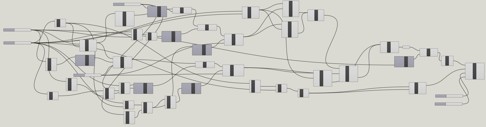
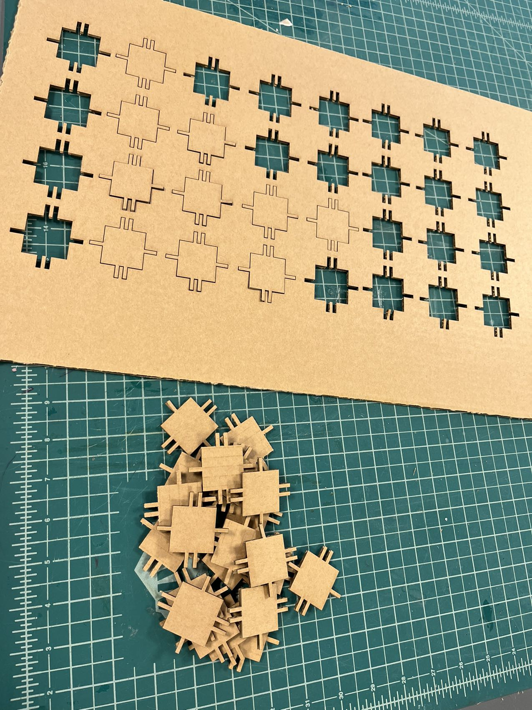
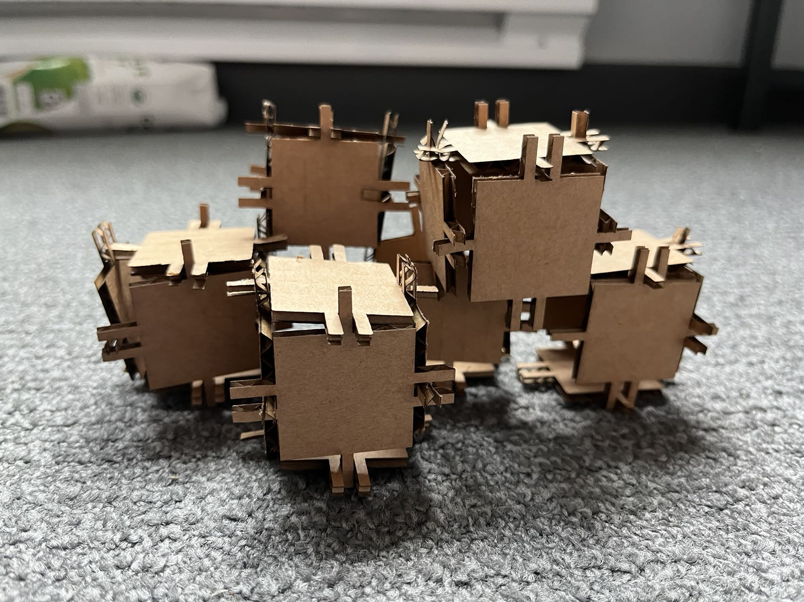

This week, I tried to make the parameterized version of A1. Here's the overview of the grasshopper
definition.

At the very beginning of the definition, users can adapt the parameters based on the required size of pieces
as well as the thickness of cardboards that will be used to laser cut. Here's how the beginning looks like:
At the end of the definition, users can change the number of pieces that will be generated by selecting
vertical and horizontal numbers using those two number sliders. Here's how the end looks like:
For the laser cut, I used the cardboard with 3mm as the thickness again and I adjusted the number slider in the gh definition to 2.95, which is slightly smaller than 3, as the cut last week was not able to fit with each other firm enough.

This time, I tried to assemble several boxes together and here's how the model looks like:

Here is the Rhino file.
Here is the Grasshopper file.